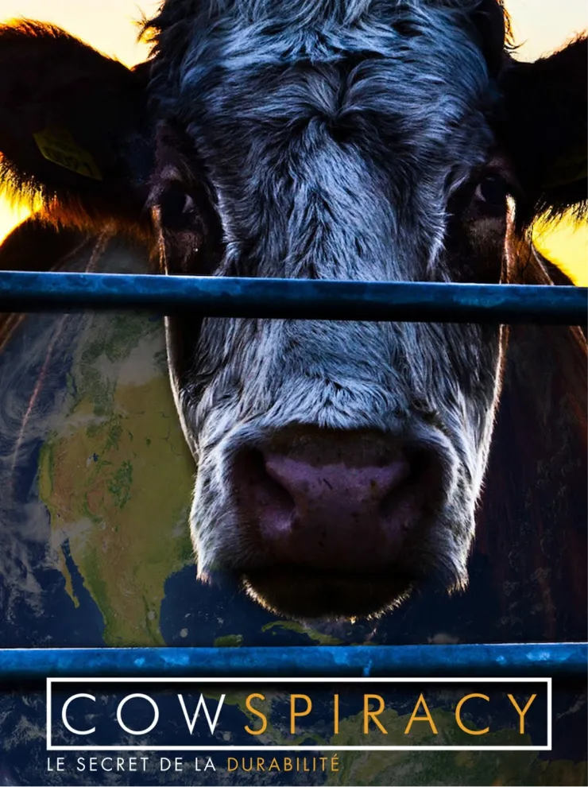

Cowspiracy

Synopsis: Cowspiracy: The Sustainability Secret explore l'impact destructeur de l'industrie de l'élevage sur l'environnement et pourquoi les principales organisations environnementales n'en parlent pas. Ce film, à la fois choquant et éducatif, met en lumière le lien entre la consommation de viande et les problèmes environnementaux tels que la déforestation, la pollution des océans et le changement climatique.
Trailer
Réalisation : Kip Andersen / Keegan Kuhn
Pays de production : États-Unis
Genre : Documentaire
Durée : 90 minutes
Sortie : 2014
Biographie

Kip Andersen est un cinéaste, producteur, écrivain, entrepreneur américain et le fondateur d'Animals United Movement Films and Media.